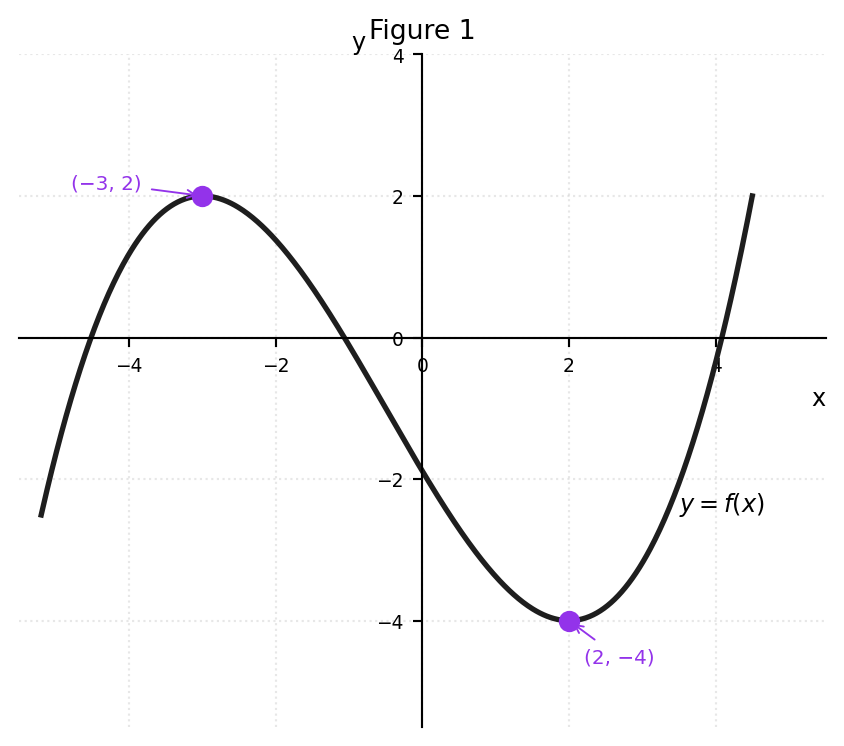
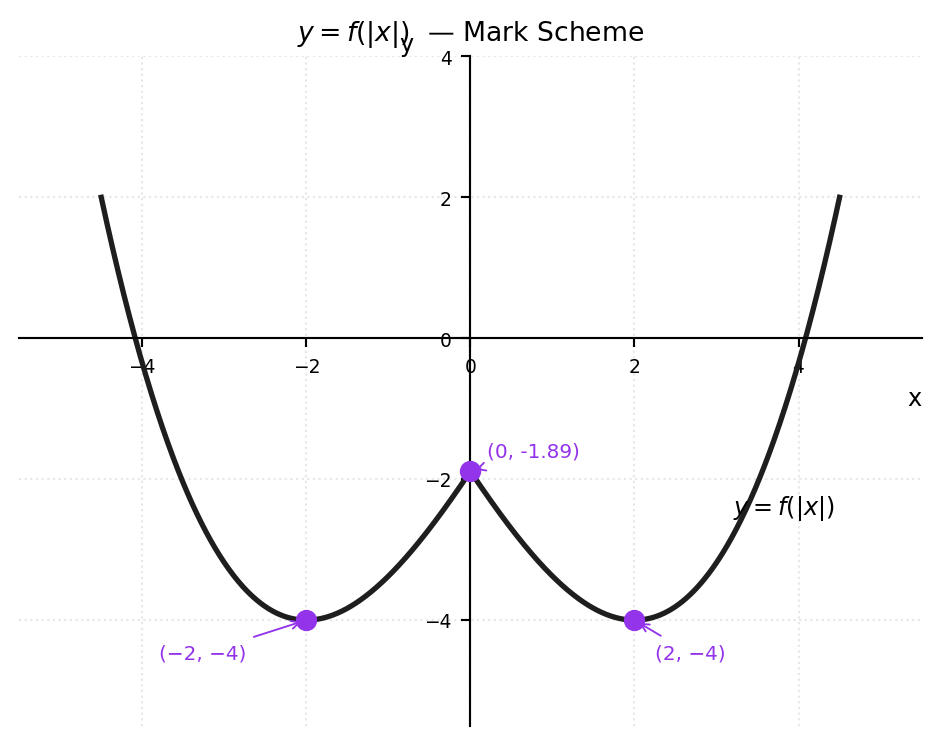
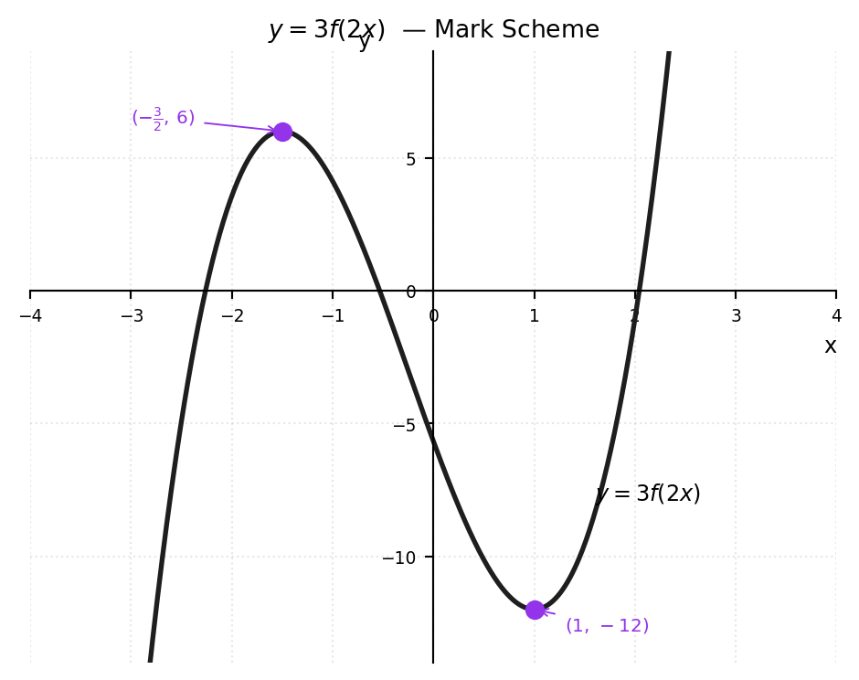
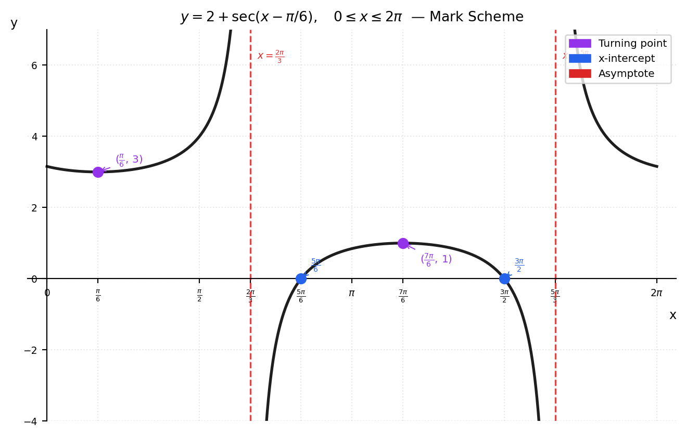

Transformations — Practice Questions
Question 1
Figure 1 shows the curve \(y = f(x)\), which has a maximum point at \((-3,\,2)\) and a minimum point at \((2,\,-4)\).
(a) Showing the coordinates of any stationary points, sketch on separate diagrams the graphs of
(i) \(y = f(|x|)\) (4)
(ii) \(y = 3f(2x)\) (3)
(b) Write down the values of the constants \(a\) and \(b\) such that the curve \(y = a + f(x+b)\) has a minimum point at the origin \(O\). (2)
Question 2
(a) Sketch the graph of \(y = 2 + \sec\!\left(x - \dfrac{\pi}{6}\right)\) for \(x\) in the interval \(0 \le x \le 2\pi\).
Show on your sketch the coordinates of any turning points and the equations of any asymptotes. (5)
(b) Find, in terms of \(\pi\), the \(x\)-coordinates of the points where the graph crosses the \(x\)-axis. (5)
Mark Scheme
Q1 (a)(i) — \(y = f(|x|)\) [4 marks]

| Mark | Criteria |
|---|---|
| M1 | Right half (\(x \ge 0\)) identical to original \(f(x)\) |
| A1 | Minimum at \((2,\,-4)\) correctly labelled |
| M1 | Left half is a reflection of the right half in the \(y\)-axis |
| A1 | Minimum at \((-2,\,-4)\) correctly labelled; original \((-3,\,2)\) max removed |
Key idea: \(f(|x|)\) replaces the entire left half of \(f(x)\) with the mirror image of the right half. The original maximum at \((-3,2)\) disappears.
Q1 (a)(ii) — \(y = 3f(2x)\) [3 marks]

| Mark | Criteria |
|---|---|
| M1 | Horizontal stretch by factor \(\tfrac{1}{2}\): \(x\)-coordinates halved |
| A1 | Maximum at \(\left(-\tfrac{3}{2},\,6\right)\) correctly labelled |
| A1 | Minimum at \((1,\,-12)\) correctly labelled |
Transformation: \(f(x) \to f(2x)\) compresses horizontally by \(\tfrac{1}{2}\); then \(\times 3\) stretches vertically by \(3\).
\[(-3,\,2) \xrightarrow{\div 2 \text{ on }x} \left(-\tfrac{3}{2},\,2\right) \xrightarrow{\times 3 \text{ on }y} \left(-\tfrac{3}{2},\,6\right)\] \[(2,\,-4) \xrightarrow{\div 2 \text{ on }x} (1,\,-4) \xrightarrow{\times 3 \text{ on }y} (1,\,-12)\]
Q1 (b) — Values of \(a\) and \(b\) [2 marks]
Required: \(y = a + f(x+b)\) has minimum at the origin \((0,\,0)\).
- \(f(x+b)\) translates \(f(x)\) left by \(b\). The minimum \((2,\,-4)\) moves to \((2-b,\,-4)\).
- Adding \(a\) shifts the graph up by \(a\). The minimum becomes \((2-b,\,-4+a)\).
Setting this equal to \((0,\,0)\):
\[2 - b = 0 \implies \boxed{b = 2}\] \[-4 + a = 0 \implies \boxed{a = 4}\]
| Mark | Criteria |
|---|---|
| B1 | \(b = 2\) |
| B1 | \(a = 4\) |
Q2 (a) — Sketch of \(y = 2 + \sec\!\left(x-\tfrac{\pi}{6}\right)\) [5 marks]

| Mark | Criteria |
|---|---|
| M1 | Correct shape: two branches of \(\sec\) with a minimum-type branch in \([0, \tfrac{2\pi}{3})\) |
| A1 | Vertical asymptotes \(x = \tfrac{2\pi}{3}\) and \(x = \tfrac{5\pi}{3}\) labelled |
| A1 | Turning point \(\left(\tfrac{\pi}{6},\,3\right)\) labelled |
| A1 | Turning point \(\left(\tfrac{7\pi}{6},\,1\right)\) labelled |
| A1 | Correct overall shape across all three branches within \([0,2\pi]\) |
Derivation of key features:
Asymptotes: \(\cos\!\left(x-\tfrac{\pi}{6}\right)=0 \implies x-\tfrac{\pi}{6} = \tfrac{\pi}{2}+n\pi\)
\[x = \tfrac{2\pi}{3} \quad (n=0), \qquad x = \tfrac{5\pi}{3} \quad (n=1)\]
Turning points where \(\tan\!\left(x-\tfrac{\pi}{6}\right)=0\), i.e. \(x-\tfrac{\pi}{6}=n\pi\):
\[x=\tfrac{\pi}{6}: \quad y = 2+\sec(0) = 3 \quad \longrightarrow \quad \left(\tfrac{\pi}{6},\,3\right)\] \[x=\tfrac{7\pi}{6}: \quad y = 2+\sec(\pi) = 2+(-1) = 1 \quad \longrightarrow \quad \left(\tfrac{7\pi}{6},\,1\right)\]
Q2 (b) — \(x\)-intercepts [5 marks]
Set \(y = 0\):
\[2 + \sec\!\left(x-\tfrac{\pi}{6}\right) = 0 \implies \sec\!\left(x-\tfrac{\pi}{6}\right) = -2 \implies \cos\!\left(x-\tfrac{\pi}{6}\right) = -\tfrac{1}{2}\]
Let \(\theta = x - \tfrac{\pi}{6}\). Then \(\cos\theta = -\tfrac{1}{2}\).
\[\theta = \tfrac{2\pi}{3} \quad \text{or} \quad \theta = \tfrac{4\pi}{3} \qquad (\text{principal values in }[0,2\pi])\]
\[x = \tfrac{2\pi}{3} + \tfrac{\pi}{6} = \tfrac{5\pi}{6} \qquad \text{and} \qquad x = \tfrac{4\pi}{3} + \tfrac{\pi}{6} = \tfrac{3\pi}{2}\]
\[\boxed{x = \dfrac{5\pi}{6} \qquad \text{and} \qquad x = \dfrac{3\pi}{2}}\]
| Mark | Criteria |
|---|---|
| M1 | Sets \(y=0\) and reaches \(\sec(\cdots) = -2\) |
| M1 | Converts to \(\cos\!\left(x-\tfrac{\pi}{6}\right) = -\tfrac{1}{2}\) |
| A1 | Correct principal value \(\theta = \tfrac{2\pi}{3}\) |
| A1 | Second value \(\theta = \tfrac{4\pi}{3}\) |
| A1 | Both final answers \(x = \tfrac{5\pi}{6}\) and \(x = \tfrac{3\pi}{2}\) |